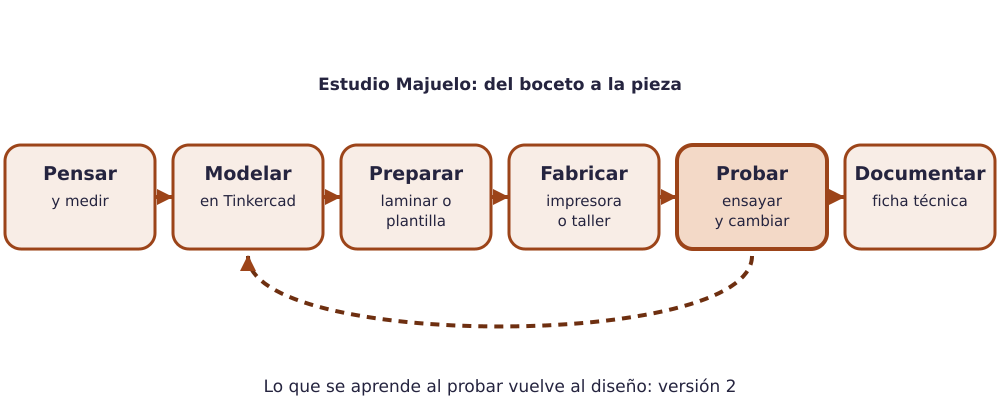

Cómo se te evalúa en esta unidad
Del boceto a la pieza: fractales para la exposición de Matemáticas
- 12 sesiones
- 7 criterios
- 6 pruebas con nota
Lo que tienes que demostrar
- 2.1
Analizar el diseño de vuestra pieza: qué necesidad cubre y qué pasará con ella al final de su vida.
Esta unidad decide el 33 % de tu 2.1 del curso
- Pieza final
- Ficha técnica abierta
- 2.2
Diseñar en 3D y fabricar: modelar, laminar, medir con calibre, cortar y pegar con precisión.
Esta unidad decide el 75 % de tu 2.2 del curso
- Retos CAD 3D
- Laminado del reto 3
- Práctica de fabricación
- Pieza final
- 3.1
Comunicar el diseño con vocabulario técnico y una ficha técnica clara, trabajando en equipo.
Esta unidad decide el 31 % de tu 3.1 del curso
- Pieza final
- Ficha técnica abierta
- Prueba corta CAD
- 3.2
Presentar vuestra pieza de forma clara y dentro del tiempo previsto.
Esta unidad decide el 25 % de tu 3.2 del curso
- Pieza final
- 5.1
Usar el programa de CAD con soltura y autonomía.
Esta unidad decide el 25 % de tu 5.1 del curso
- Retos CAD 3D
- Prueba corta CAD
- 6.1
Elegir materiales y procesos con criterio sostenible: reciclar, aprovechar y no desperdiciar.
Esta unidad decide el 38 % de tu 6.1 del curso
- Práctica de fabricación
- Pieza final
- 6.3
Valorar qué aporta vuestro proyecto a la comunidad del centro.
Esta unidad decide el 20 % de tu 6.3 del curso
- Ficha técnica abierta
Con qué y cuándo
se trabaja Ssesión en que se entrega o se hace
Contenido
Del boceto a la pieza
En esta unidad vas a aprender a diseñar objetos en 3D con el ordenador y a fabricarlos de verdad: con la impresora 3D y con las herramientas del taller. Al final, en equipo, diseñaréis, fabricaréis y probaréis una pieza para la exposición de fractales del Departamento de Matemáticas.

Cómo vas a avanzar
- Aprender a diseñar: tu primer diseño en Tinkercad y cuatro retos individuales.
- Aprender a fabricar: cómo funciona una impresora 3D, el laminador y el taller.
- El proyecto en equipo: elegir, diseñar, fabricar, probar y documentar vuestra pieza.
- La prueba: modelar una pieza a partir de un plano.
Cada apartado empieza con la idea, sigue con los pasos y las capturas, y termina con «Ahora tú» para practicar. Si algo no te sale, vuelve al paso y pregunta: todo se hace en clase y no necesitas ordenador en casa.
Qué entregarás
| Quién | Qué | Cómo |
|---|---|---|
| Tú | Retos CAD 3D | Cuatro diseños: reto1.stl, reto2.stl, reto3.stl y reto4.stl, con sus enlaces. |
| Tú | Prueba corta CAD | En clase: modelar una pieza desde un plano y contestar tres preguntas. |
| Equipo | Pieza final | El diseño, una foto, la cartela y el texto de la prueba. |
| Equipo | Ficha técnica abierta | ficha_tecnica.pdf. |
| Equipo | Presentación | Dos minutos en clase. |
| Equipo | Trabajo en el taller | Observo cómo trabajáis. No se entrega nada. |
Todo se entrega en Moodle. No pongas nombres de personas ni fotos de caras en los archivos.